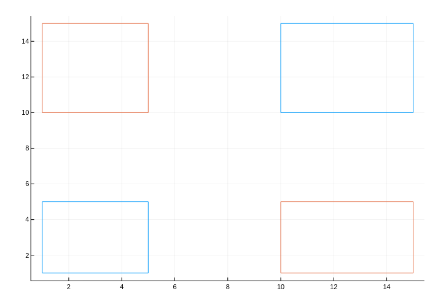

Input Data
Part of the power of Plots lies is in the many combinations of allowed input data. You shouldn't spend your time transforming and massaging your data into a specific format. Let Plots do that for you.
There are a few rules to remember, and you'll be a power user in no time.
Inputs are arguments, not keywords
The plot function has several methods: plot(y): treats the input as values for the y-axis and yields a unit-range as x-values. plot(x, y): creates a 2D plot plot(x, y, z): creates a 3D plot
The reason lies in the flexibility of Julia's multiple dispatch, where every combination of input types can have unique behavior, when desired.
Columns are series
In most cases, passing a (n × m) matrix of values (numbers, etc) will create m series, each with n data points. This follows a consistent rule… vectors apply to a series, matrices apply to many series. This rule carries into keyword arguments. scatter(rand(10,4), markershape = [:circle, :rect]) will create 4 series, each assigned the markershape vector [:circle,:rect]. However, scatter(rand(10,4), markershape = [:circle :rect]) will create 4 series, with series 1 and 3 having markers shaped as :circle and series 2 and 4 having markers shaped as :rect (i.e. as squares). The difference is that in the first example, it is a length-2 column vector, and in the second example it is a (1 × 2) row vector (a Matrix).
The flexibility and power of this can be illustrated by the following piece of code:
using Plots
# 10 data points in 4 series
xs = range(0, 2π, length = 10)
data = [sin.(xs) cos.(xs) 2sin.(xs) 2cos.(xs)]
# We put labels in a row vector: applies to each series
labels = ["Apples" "Oranges" "Hats" "Shoes"]
# Marker shapes in a column vector: applies to data points
markershapes = [:circle, :star5]
# Marker colors in a matrix: applies to series and data points
markercolors = [
:green :orange :black :purple
:red :yellow :brown :white
]
plot(
xs,
data,
label = labels,
shape = markershapes,
color = markercolors,
markersize = 10
)This example plots the four series with different labels, marker shapes, and marker colors by combining row and column vectors to decorate the data.
The following example illustrates how Plots.jl handles: an array of matrices, an array of arrays of arrays and an array of tuples of arrays.
x1, x2 = [1, 0], [2, 3] # vectors
y1, y2 = [4, 5], [6, 7] # vectors
m1, m2 = [x1 y1], [x2 y2] # 2x2 matrices
plot([m1, m2]) # array of matrices -> 4 series, plots each matrix column, x assumed to be integer count
plot([[x1,y1], [x2,y2]]) # array of array of arrays -> 4 series, plots each individual array, x assumed to be integer count
plot([(x1,y1), (x2,y2)]) # array of tuples of arrays -> 2 series, plots each tuple as new seriesUnconnected Data within same groups
As shown in the examples, you can plot a single polygon by using a single call to plot using the :path line type. You can use several calls to plot to draw several polygons.
Now, let's say you're plotting n polygons grouped into g groups, with n > g. While you can use plot to draw separate polygons with each call, you cannot group two separate plots back into a single group. You'll end up with n groups in the legend, rather than g groups.
To address this, you can use NaN as a path separator. A call to plot would then draw one path with disjoints The following code draws n=4 rectangles in g=2 groups.
using Plots
plotlyjs()
function rectangle_from_coords(xb,yb,xt,yt)
[
xb yb
xt yb
xt yt
xb yt
xb yb
NaN NaN
]
end
some_rects=[
rectangle_from_coords(1, 1, 5, 5)
rectangle_from_coords(10, 10, 15, 15)
]
other_rects=[
rectangle_from_coords(1, 10, 5, 15)
rectangle_from_coords(10, 1, 15, 5)
]
plot(some_rects[:,1], some_rects[:,2], label = "some group")
plot!(other_rects[:,1], other_rects[:,2], label = "other group")"input_data_1.png"
DataFrames support
Using the StatsPlots extension package, you can pass a DataFrame as the first argument (similar to Gadfly or R's ggplot2). For data fields or certain attributes (such as group) a symbol will be replaced with the corresponding column(s) of the DataFrame. Additionally, the column name might be used as the An example:
using StatsPlots, RDatasets
gr()
iris = dataset("datasets", "iris")
@df iris scatter(
:SepalLength,
:SepalWidth,
group = :Species,
m = (0.5, [:+ :h :star7], 12),
bg = RGB(0.2, 0.2, 0.2)
)Functions
Functions can typically be used in place of input data, and they will be mapped as needed. 2D and 3D parametric plots can also be created, and ranges can be given as vectors or min/max. For example, here are alternative methods to create the same plot:
using Plots
tmin = 0
tmax = 4π
tvec = range(tmin, tmax, length = 100)
plot(sin.(tvec), cos.(tvec))plot(sin, cos, tvec)plot(sin, cos, tmin, tmax)Vectors of functions are allowed as well (one series per function).
Images
Images can be directly added to plots by using the Images.jl library. For example, one can import a raster image and plot it with Plots via the commands:
using Plots, Images
img = load("image.png")
plot(img)PDF graphics can also be added to Plots.jl plots using load("image.pdf"). Note that Images.jl requires that the PDF color scheme is RGB.
Shapes
Save Gotham
using Plots
function make_batman()
p = [(0, 0), (0.5, 0.2), (1, 0), (1, 2), (0.3, 1.2), (0.2, 2), (0, 1.7)]
s = [(0.2, 1), (0.4, 1), (2, 0), (0.5, -0.6), (0, 0), (0, -0.15)]
m = [(p[i] .+ p[i + 1]) ./ 2 .+ s[i] for i in 1:length(p) - 1]
pts = similar(m, 0)
for (i, mi) in enumerate(m)
append!(
pts,
map(PlotsBase.BezierCurves.BezierCurve([p[i], m[i], p[i + 1]]), range(0, 1, length = 30))
)
end
x, y = Plots.unzip(Tuple.(pts))
Shape(vcat(x, -reverse(x)), vcat(y, reverse(y)))
end
# background and limits
plt = plot(
bg = :black,
xlim = (0.1, 0.9),
ylim = (0.2, 1.5),
framestyle = :none,
size = (400, 400),
legend = false,
)# create an ellipse in the sky
pts = PlotsBase.partialcircle(0, 2π, 100, 0.1)
x, y = Plots.unzip(pts)
x = 1.5x .+ 0.7
y .+= 1.3
pts = collect(zip(x, y))
# beam
beam = Shape([(0.3, 0.0), pts[95], pts[50], (0.3, 0.0)])
plot!(beam, fillcolor = plot_color(:yellow, 0.3))# spotlight
plot!(Shape(x, y), c = :yellow)# buildings
rect(w, h, x, y) = Shape(x .+ [0, w, w, 0, 0], y .+ [0, 0, h, h, 0])
gray(pct) = RGB(pct, pct, pct)
function windowrange(dim, denom)
range(0, 1, length = max(3, round(Int, dim/denom)))[2:end - 1]
end
for k in 1:50
local w, h, x, y = 0.1rand() + 0.05, 0.8rand() + 0.3, rand(), 0.0
shape = rect(w, h, x, y)
graypct = 0.3rand() + 0.3
plot!(shape, c = gray(graypct))
# windows
I = windowrange(w, 0.015)
J = windowrange(h, 0.04)
local pts = vec([(Float64(x + w * i), Float64(y + h * j)) for i in I, j in J])
windowcolors = Symbol[rand() < 0.2 ? :yellow : :black for i in 1:length(pts)]
scatter!(pts, marker = (stroke(0), :rect, windowcolors))
end
plt# Holy plotting, Batman!
batman = PlotsBase.scale(make_batman(), 0.07, 0.07, (0, 0))
batman = PlotsBase.translate(batman, 0.7, 1.23)
plot!(batman, fillcolor = :black)Extra keywords
There are some features that are very specific to a certain backend or not yet implemented in Plots. For these cases it is possible to forward extra keywords to the backend. Every keyword that is not a Plots keyword will then be collected in a extra_kwargs dictionary.
This dictionary has three layers: :plot, :subplot and :series (default). To which layer the keywords get collected can be specified by the extra_kwargs keyword. If arguments should be passed at multiple layers in the same call or the keyword is already a valid Plots keyword, the extra_kwargs dictionary has to be constructed at the call site.
plot(1:5, series_keyword = 5)
# results in extra_kwargs = Dict( :series => Dict( series_keyword => 5 ) )
plot(1:5, colormap_width = 6, extra_kwargs = :subplot)
# results in extra_kwargs = Dict( :subplot => Dict( colormap_width = 6 ) )
plot(1:5, extra_kwargs = Dict( :series => Dict( series_keyword => 5 ), :subplot => Dict( colormap_width => 6 ) ) )Refer to the tracking issue to see for which backends this feature is implemented. Which extra keywords the backend actually handles should be documented in the backend documentation.
Using the extra keywords machinery will make your code backend dependent. Only use it for final tweaks. It is clearly a bad idea to use it in recipes.